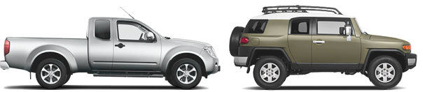
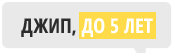

"Хозяйственный мужчина ищет надежную красавицу для прогулок по бездорожью.
Полный привод обязателен."

Яндекс.Авто за минуту
Простой способ выбрать автомобиль

Каталог
Поиск
Выборки автомобилей
Простой язык
Самый большой каталог с описанием автомобилейот современных — до 20 лет назад
Возможность искать по большему числу параметров, чем где бы то ни было
Выборки автомобилей в зависимости от ваших потребностей: «семейный», «для города», «для путешествий»
Возможность описания характеристик простым языком, понятным неискушенному пользователю
Выбирайте. Находите. Заводите!